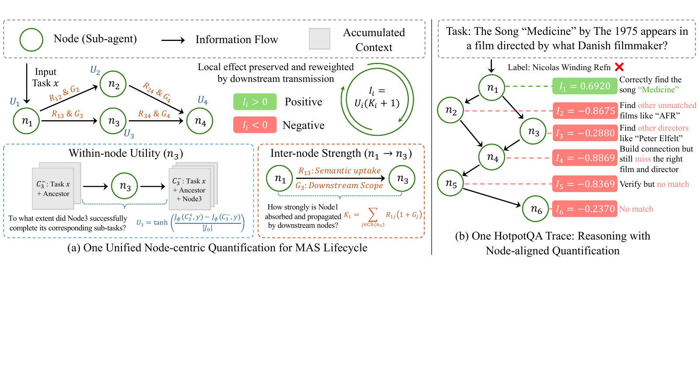
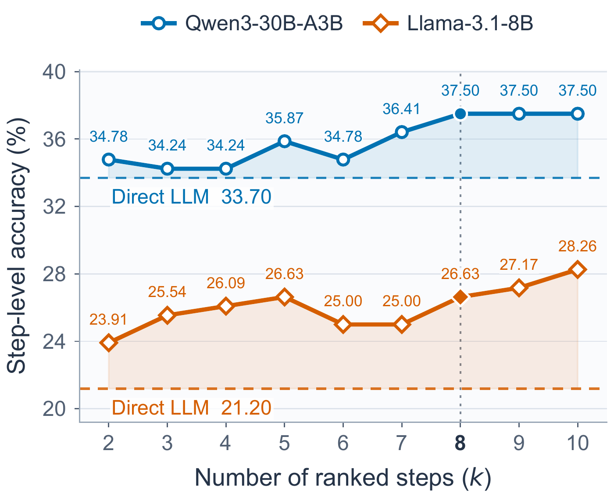

Orchestrate
Dense rewards for system design
One structural view of the agents that help,
the information that spreads, and the errors that persist.
Dense rewards for system design
One edit from an observed prefix
Risk-guided error localization
Results reported in the paper. The first two averages cover different benchmark sets and should not be compared directly.
Multi-agent research often optimizes one phase at a time: the initial team, its behavior during execution, or the diagnosis of a finished run. MAS-Gate frames these as a connected lifecycle and introduces a shared node-centric quantification. It combines a node’s change in reference-answer support with the extent to which its information is taken up and can reach downstream computation.
The same node impact supports three applications: a dense reward for Orchestrator training, paired rewards for an Editor that acts on execution prefixes, and risk-ranked evidence for an LLM localizer after execution. The manuscript evaluates these uses on interactive environments, knowledge-intensive QA, mathematical reasoning, and attribution benchmarks.
Replay the documented case for free, or run your own task.
Relate local reference-answer support to semantic uptake and downstream reach.
Train construction and intervention policies, then prioritize evidence for error attribution.
Compare orchestration, runtime editing, and localization with their corresponding baselines.

Represent an execution as a directed acyclic graph. Each node produces an output; each edge makes an upstream output available to a downstream agent. MAS-Gate combines three measurements.
J is the mean token log-likelihood of the reference answer. Compare ancestor context before and after adding the node’s output; normalize by the task-only baseline.
R is an NLI entailment probability used as a semantic-uptake proxy. G is the child’s descendant count divided by the graph’s maximum descendant count.
A useful contribution gains weight when it spreads. A harmful contribution can also be amplified by downstream uptake.
A terminal child has no further descendants, but an incoming edge can still carry useful or harmful information. Likewise, a terminal node has no children, but its local utility still counts. The two baseline shifts preserve both contributions.
Illustrative inputs. Negative impact becomes positive attribution risk; it is not proof of a causal error.
Reference-answer likelihood is a proxy for contribution, not a direct test of intermediate correctness. Entailment is a proxy for uptake, and graph reach is potential influence.
The Orchestrator trains with correctness plus mean node impact. Sub-agents and quantification models remain fixed.
The Editor sees the task, graph and completed outputs. It can apply at most one non-Keep intervention, preserving unaffected computation.
Rank steps by max(0, −I). The localizer receives the complete trajectory, reference answer and ranked candidate indices, while remaining free to choose any valid step.
Keep · Retry current · Annotate current · Backtrack parent · Guide child · Insert subtask. The research protocol permits one non-Keep intervention and at most four extra node executions.
MAS-Gate quantification supplies privileged training feedback. The runtime decision uses only the observed prefix. A paired reward is calculated after the edited and unedited continuations both complete: Δcorrectness + 0.1 × Δmean impact − action cost.
The current runtime implementation validates structured action payloads and checks each node’s assigned task and constraints. Retry reuses the saved prompt and context, with a replay-safety check. Annotation preserves the raw output and quotes an observed span. Inserted VERIFY, BRIDGE, or SUPPLEMENT steps retain the original milestone in the handoff. Editor conversations retain earlier gates.
The attribution experiments approximate recorded trajectories as chronological chains. Who&When predicts a zero-based step; AEGIS predicts an agent using the maximum risk over that agent’s eligible steps. User and System turns remain context but are not targets in AEGIS.
Design-time MAS-Gate leads the reported seven-benchmark comparison at 44.70%, versus 33.30% for the strongest competing MAS method. The runtime Editor reaches 47.87% across six benchmarks, versus 44.16% for DyLAN.
| Method | ALFWorld | ScienceWorld | VitaBench | HotpotQA | BrowseComp-Plus | AIME | GPQA-Diamond | Average |
|---|---|---|---|---|---|---|---|---|
| CoT | 37.18 | 1.26 | 29.19 | 50.00 | 11.31 | 28.07 | 48.99 | 29.43 |
| CoT-SC | 32.05 | 1.07 | 28.23 | 54.00 | 8.33 | 29.82 | 52.02 | 29.36 |
| AFlow | 31.09 | 3.90 | 23.54 | 46.50 | 12.50 | 15.79 | 33.84 | 23.88 |
| AOrchestra | 57.05 | 8.93 | 9.18 | 48.00 | 12.50 | 40.35 | 57.07 | 33.30 |
| Skill-MAS | 28.21 | 5.25 | 13.55 | 54.00 | 8.93 | 19.30 | 48.99 | 25.46 |
| MAS-GPT | 53.53 | 14.81 | 7.52 | 51.00 | 11.31 | 24.56 | 54.04 | 30.97 |
| ToolOrchestra | 37.50 | 7.69 | 10.98 | 37.50 | 3.57 | 12.28 | 36.36 | 20.84 |
| MAS-Orchestra | 14.42 | 2.33 | 22.22 | 51.00 | 9.52 | 21.05 | 41.41 | 23.14 |
| MAS-Gate | 57.69 | 18.27 | 45.29 | 69.50 | 13.69 | 47.37 | 61.11 | 44.70 |
| Method | ALFWorld | ScienceWorld | HotpotQA | BrowseComp-Plus | AIME | GPQA-Diamond | Average |
|---|---|---|---|---|---|---|---|
| DeepSeek-V4-Flash | 34.94 | 7.33 | 62.00 | 11.31 | 31.58 | 54.04 | 33.53 |
| GPT-5.4-Mini | 37.50 | 5.67 | 57.50 | 9.52 | 35.09 | 59.09 | 34.06 |
| Self-Refine | 48.40 | 13.67 | 58.00 | 5.36 | 38.60 | 55.05 | 36.51 |
| AgentDropoutV2 | 53.21 | 17.00 | 69.00 | 9.52 | 42.11 | 63.64 | 42.41 |
| DyLAN | 55.77 | 16.67 | 72.50 | 12.50 | 43.86 | 63.64 | 44.16 |
| AgentPrune | 51.28 | 9.34 | 70.00 | 10.12 | 31.58 | 61.11 | 38.91 |
| MAS-Gate | 59.62 | 22.33 | 75.50 | 15.48 | 49.12 | 65.15 | 47.87 |
The runtime study excludes VitaBench. The design-time Orchestrator and runtime study’s fixed Orchestrator are different settings; the two averages do not form a single before/after experiment.
Risk guidance improves four of five localizers on Who&When and all five on the single-target AEGIS subset. Qwen3.6-27B declines from 40.76% to 39.67% on Who&When; the results do not imply universal improvement.
| Localizer | Who&When direct | + MAS-Gate | AEGIS direct | + MAS-Gate |
|---|---|---|---|---|
| Qwen3-30B-A3B | 33.70 | 37.50 | 43.07 | 43.80 |
| Qwen3.5-4B | 34.24 | 35.87 | 34.31 | 40.15 |
| Qwen3.6-27B | 40.76 | 39.67 | 52.55 | 54.01 |
| Mistral-Small-3.2-24B | 30.98 | 32.07 | 50.36 | 51.82 |
| Llama-3.1-8B | 21.20 | 26.63 | 38.69 | 40.15 |

The HotpotQA question asks who assisted the not-for-profit owner of a Mark VI monorail with bond financing. The first agent correctly identifies the Las Vegas Monorail Company, but its output omits the financing relation.
The Editor chooses Retry-Current before either downstream agent runs. It does not see the later incorrect FTA answer and supplies no replacement answer or textual diagnosis. The retry returns the missing financing relation, and the unchanged downstream workflow uses it.
“The State of Nevada provided bond financing assistance for the project, though no public funds were used in construction.”
HotpotQA task 5ab5cd0d554299488d4d9a30. This is a paper-reported example, not a live API run or an isolated causal estimate.
Replay the documented handoff ↗In Who&When trajectory Algorithm-Generated/4, a real-estate expert introduces an incorrect $950,000 sale-price claim at step 2. Later validation and analysis steps repeat it. The reference answer is 900000; the recorded answer is 950000.
Both localizers retain the complete execution and reference answer. The added ranking helps prioritize the earlier contribution where the released annotation locates the decisive error.
Qwen3-30B-A3B, k = 8. The manuscript supplies these prediction excerpts; numeric node scores and the complete raw trajectory are not bundled here.
The complete method, experimental comparisons, and documented case studies.
Read PDF ↗ 02Research code organized into exp1, exp2 and exp3. See the repository README for setup and source availability.
Explore GitHub ↗ 03Runtime gates, paired continuations, an interactive signal explorer and post-hoc attribution.
Open Demo ↗The default DeepSeek API adapter uses prompted policies and explicitly labeled estimates of support change and uptake. These are not teacher-forced likelihoods or BGE NLI scores. A separate optional service connects the original local likelihood and NLI implementations.
The paper walkthrough reports documented excerpts without fabricated scores. Live attribution is an unverified diagnosis; the complete benchmark environments and trained policies are separate resources.
@misc{lin2026masgate,
title = {MAS-Gate: Unlocking Multi-Agent System Lifecycle
via Node-Centric Quantification},
author = {Lin, Hehai and Wang, Zixuan and Yan, Ming and
Wang, Peidong and Cao, Shilei and Li, Minzhi and
Ding, Bosheng and Zheng, Juepeng and Qin, Chengwei},
year = {2026},
note = {Manuscript}
}
Research code is available on GitHub. The hosted demo illustrates the lifecycle with prompted policies; see the paper for the trained systems and full evaluation protocol.